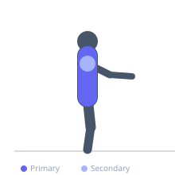
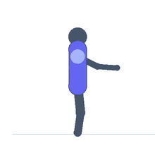

Exercise guide / Quadruped Thoracic Rotation Reach
Quadruped Thoracic Rotation Reach
A thoracic rotation mobility drill performed on all fours in which one arm reaches under and across the body before reversing and reaching upward toward the ceiling. The quadruped position stabilizes the hips and lumbar spine, isolating the thoracic rotation. The reaching motion — threading the arm under the torso then opening upward — creates a full arc of thoracic rotation and is one of the most accessible and effective thoracic mobility exercises available.
Primary muscles
erector spinae
trapezius middle
Secondary muscles
rhomboid major
deltoid posterior
Stabilizers
transverse abdominis
Equipment
No Equipment (Bodyweight)


Starting position
- Begin in a quadruped position with wrists under shoulders and knees under hips. Spine neutral.
Setup
- No equipment needed. A mat is recommended for knee comfort.
Steps
- Step 1: Begin in quadruped with the right hand on the floor.
- Step 2: Slide the left arm under the right arm and across the floor to the right as far as possible, letting the left shoulder rest on the floor. This is the 'thread' phase.
- Step 3: Hold the threaded position for 2 seconds, then reverse and open the left arm upward toward the ceiling, rotating the thoracic spine to follow the arm.
- Step 4: Hold the open position for 2 seconds, following the hand with the gaze. Return and repeat, then switch sides.
Coaching cues
- Follow the hand with the eyes — the gaze leads the thoracic rotation
- Let the shoulder touch the floor on the thread phase — the deeper the thread, the greater the rotation
- Keep the hips stacked — they should not rotate with the thoracic spine
Breathing
- Exhale as you thread under. Inhale as you open toward the ceiling.
Range of motion
- Thread as far as the shoulder allows; open as far as thoracic rotation allows. Lumbar and hip rotation should be minimized.
Tempo
- 2s thread, 2s hold, 2s open, 2s hold — continuous flow for each repetition.
Common mistakes
- Rotating through the lumbar spine rather than the thoracic spine — the hips should not rotate significantly
- Moving too quickly through the motion — the value is at the end range in each direction
- Using the supporting arm to push into rotation rather than allowing the thoracic spine to do the work
Safety
- If sharp thoracic pain occurs during the rotation, reduce range and consult a physiotherapist
- Avoid if you have an acute thoracic disc herniation unless prescribed
Training
- mobility: 5–10 reps
- mobility: 2–3 sets
- Rest: {'mobility': 60}